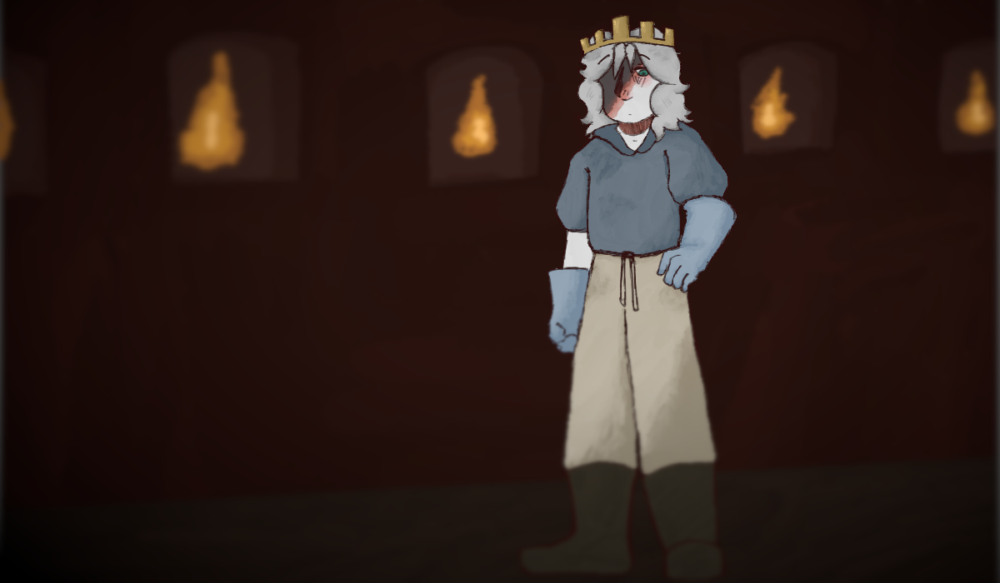

Aveugle

Vous vous retrouvez dans une pièce sombre, seul la lueur des chandelles éclairant vos entourages. Vous êtes soudainement assommé, votre vision devenant de plus en plus sombre.

Vous vous retrouvez dans une pièce sombre, seul la lueur des chandelles éclairant vos entourages. Vous êtes soudainement assommé, votre vision devenant de plus en plus sombre.